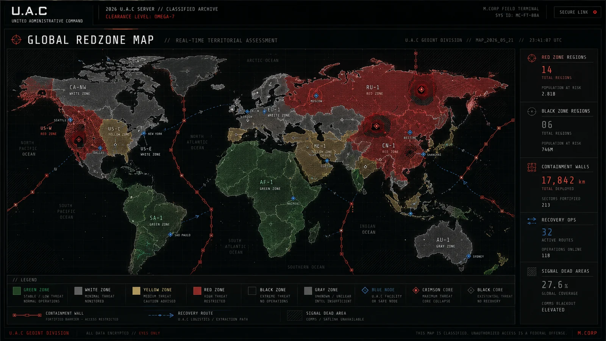

Redzone_881120
오염 단계, 정신 감염, 기록 오류, 현장 검사 기준.
VISUAL RECORD CACHE

RELATED FILES // QUICK ACCESS
압축 분류
STATUS: ACTIVE / ACCESS: RESTRICTED / DAMAGE: 24%. 관련 태그는 CONTAMINATION, REDZONE, RETURNED CIVILIAN로 묶이며, 이 기록은 U.A.C 정보 서버에서 긴 원문 대신 현장 열람용 요약 파일로 우선 표시된다.
오염 기준
레드존 오염은 신체 반응뿐 아니라 기억 오류, 반복 언어, 감각 왜곡, 영상 기록 불일치로 판정한다.
정신 감염
노출자는 특정 숫자, 노래, 문장, 검은 액체 이미지에 반응할 수 있다.
RELATED FILES
EXTENDED RECORD
OPEN EXTENDED RECORD
Redzone_881120는 레드존 이상현상 및 오염 기준 문서에서 파생된 서버 열람용 확장 기록이다. 현재 상태는 ACTIVE, 접근 권한은 RESTRICTED, 기록 손상도는 24%로 표시된다. 핵심 태그는 CONTAMINATION, REDZONE, RETURNED CIVILIAN이며, 이 기록은 요약본을 먼저 보여준 뒤 필요한 경우 상세 블록을 펼쳐 읽는 구조로 정리되었다. [압축 페이지] - 압축 분류: STATUS: ACTIVE / ACCESS: RESTRICTED / DAMAGE: 24%. 관련 태그는 CONTAMINATION, REDZONE, RETURNED CIVILIAN로 묶이며, 이 기록은 U.A.C 정보 서버에서 긴 원문 대신 현장 열람용 요약 파일로 우선 표시된다. - 오염 기준: 레드존 오염은 신체 반응뿐 아니라 기억 오류, 반복 언어, 감각 왜곡, 영상 기록 불일치로 판정한다. - 정신 감염: 노출자는 특정 숫자, 노래, 문장, 검은 액체 이미지에 반응할 수 있다. [서버 해석] 이 문서는 독립된 설정글이 아니라 세계 현황, 세력 관계, 구역 위험도, 회수 기록과 연결되는 노드로 취급된다. 관련 기록을 함께 열람하면 사건의 원인, 현장 대응, 오염 확산, 기록 손상 여부를 더 쉽게 추적할 수 있다.